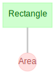

Quick Start Guide¶
Tutorials¶
The easiest way to get started is through the DataJoint Tutorials. These tutorials are configured to run using GitHub Codespaces where the full environment including the database is already set up.
Advanced users can install DataJoint locally. Please see the installation instructions below.
Installation¶
First, please install Python version 3.8 or later.
Next, please install DataJoint via one of the following:
Pre-Requisites - Ensure you have conda installed.
To add the conda-forge channel:
conda config --add channels conda-forge
To install:
conda install -c conda-forge datajoint
Pre-Requisites - Ensure you have pip installed. - Install graphviz pre-requisite for diagram visualization.
To install:
pip install datajoint
Connection¶
Before using datajoint, set the following environment variables like so:
1 2 3 | |
To set connection settings within Python, perform:
1 2 3 4 5 | |
These configuration settings can be saved either locally or system-wide using one of the following commands:
dj.config.save_local()
dj.config.save_global()
Before using datajoint, create a file named dj_local_conf.json in the current
directory like so:
1 2 3 4 5 | |
These settings will be loaded whenever a Python instance is launched from this
directory. To configure settings globally, save a similar file as
.datajoint_config.json in your home directory. A local config, if present, will
take precedent over global settings.
Data Pipeline Definition¶
Let's definite a simple data pipeline.
1 2 3 4 5 6 7 8 9 10 11 12 13 14 15 16 17 18 19 20 21 22 23 24 25 26 27 | |
It is a common practice to have a separate Python module for each schema. Therefore,
each such module has only one dj.Schema object defined and is usually named
schema.
The dj.Schema constructor can take a number of optional parameters
after the schema name.
context- Dictionary for looking up foreign key references. Defaults toNoneto use local context.connection- Specifies the DataJoint connection object. Defaults todj.conn().create_schema- WhenFalse, the schema object will not create a schema on the database and will raise an error if one does not already exist. Defaults toTrue.create_tables- WhenFalse, the schema object will not create tables on the database and will raise errors when accessing missing tables. Defaults toTrue.
The @schema decorator uses the class name and the data tier to check whether an
appropriate table exists on the database. If a table does not already exist, the
decorator creates one on the database using the definition property. The decorator
attaches the information about the table to the class, and then returns the class.
Diagram¶
Display¶
The diagram displays the relationship of the data model in the data pipeline.
This can be done for an entire schema:
import datajoint as dj
schema = dj.Schema('my_database')
dj.Diagram(schema)

Or for individual or sets of tables:
dj.Diagram(schema.Rectangle)
dj.Diagram(schema.Rectangle) + dj.Diagram(schema.Area)
What if I don't see the diagram?
Some Python interfaces may require additional draw method.
dj.Diagram(schema).draw()
Calling the .draw() method is not necessary when working in a Jupyter notebook by
entering dj.Diagram(schema) in a notebook cell. The Diagram will automatically
render in the notebook by calling its _repr_html_ method. A Diagram displayed
without .draw() will be rendered as an SVG, and hovering the mouse over a table
will reveal a compact version of the output of the .describe() method.
For more information about diagrams, see this article.
Customize¶
Adding or subtracting a number to a diagram object adds nodes downstream or upstream, respectively, in the pipeline.
(dj.Diagram(schema.Rectangle)+1).draw() # Plot all the tables directly downstream from `schema.Rectangle`
(dj.Diagram('my_schema')-1+1).draw() # Plot all tables directly downstream of those directly upstream of this schema.
Save¶
The diagram can be saved as either png or svg.
dj.Diagram(schema).save(filename='my-diagram', format='png')
Insert data¶
Data entry is as easy as providing the appropriate data structure to a permitted table.
Let's add data for a rectangle:
Rectangle.insert1(dict(shape_id=1, shape_height=2, shape_width=4))
Given the following table definition, we can insert data
as tuples, dicts, pandas dataframes, or pathlib Path relative paths to local CSV
files.
mouse_id: int # unique mouse id
---
dob: date # mouse date of birth
sex: enum('M', 'F', 'U') # sex of mouse - Male, Female, or Unknown
mouse.insert1( (0, '2017-03-01', 'M') ) # Single entry
data = [
(1, '2016-11-19', 'M'),
(2, '2016-11-20', 'U'),
(5, '2016-12-25', 'F')
]
mouse.insert(data) # Multi-entry
mouse.insert1( dict(mouse_id=0, dob='2017-03-01', sex='M') ) # Single entry
data = [
{'mouse_id':1, 'dob':'2016-11-19', 'sex':'M'},
{'mouse_id':2, 'dob':'2016-11-20', 'sex':'U'},
{'mouse_id':5, 'dob':'2016-12-25', 'sex':'F'}
]
mouse.insert(data) # Multi-entry
import pandas as pd
data = pd.DataFrame(
[[1, "2016-11-19", "M"], [2, "2016-11-20", "U"], [5, "2016-12-25", "F"]],
columns=["mouse_id", "dob", "sex"],
)
mouse.insert(data)
Given the following CSV in the current working directory as mice.csv
mouse_id,dob,sex
1,2016-11-19,M
2,2016-11-20,U
5,2016-12-25,F
We can import as follows:
from pathlib import Path
mouse.insert(Path('./mice.csv'))
Run computation¶
Let's start the computations on our entity: Area.
Area.populate(display_progress=True)
The make method populates automated tables from inserted data. Read more in the
full article here
Query¶
Let's inspect the results.
Area & "shape_area >= 8"
| shaped_id | shape_area |
|---|---|
| 1 | 8.0 |
Fetch¶
Data queries in DataJoint comprise two distinct steps:
- Construct the
queryobject to represent the required data using tables and operators. - Fetch the data from
queryinto the workspace of the host language.
Note that entities returned by fetch methods are not guaranteed to be sorted in any
particular order unless specifically requested. Furthermore, the order is not
guaranteed to be the same in any two queries, and the contents of two identical queries
may change between two sequential invocations unless they are wrapped in a transaction.
Therefore, if you wish to fetch matching pairs of attributes, do so in one fetch
call.
data = query.fetch()
Entire table¶
A fetch command can either retrieve table data as a NumPy
recarray
or a as a list of dict
data = query.fetch() # NumPy recarray
data = query.fetch(as_dict=True) # List of `dict`
In some cases, the amount of data returned by fetch can be quite large; it can be
useful to use the size_on_disk attribute to determine if running a bare fetch
would be wise. Please note that it is only currently possible to query the size of
entire tables stored directly in the database at this time.
Separate variables¶
name, img = query.fetch1('mouse_id', 'dob') # when query has exactly one entity
name, img = query.fetch('mouse_id', 'dob') # [mouse_id, ...] [dob, ...]
Primary key values¶
keydict = tab.fetch1("KEY") # single key dict when tab has exactly one entity
keylist = tab.fetch("KEY") # list of key dictionaries [{}, ...]
KEY can also used when returning attribute values as separate
variables, such that one of the returned variables contains the entire
primary keys.
Sorting results¶
To sort the result, use the order_by keyword argument.
data = query.fetch(order_by='mouse_id') # ascending order
data = query.fetch(order_by='mouse_id desc') # descending order
data = query.fetch(order_by=('mouse_id', 'dob')) # by ID first, dob second
data = query.fetch(order_by='KEY') # sort by the primary key
The order_by argument can be a string specifying the attribute to sort by. By default
the sort is in ascending order. Use 'attr desc' to sort in descending order by
attribute attr. The value can also be a sequence of strings, in which case, the sort
performed on all the attributes jointly in the order specified.
The special attribute named 'KEY' represents the primary key attributes in order that
they appear in the index. Otherwise, this name can be used as any other argument.
If an attribute happens to be a SQL reserved word, it needs to be enclosed in backquotes. For example:
data = query.fetch(order_by='`select` desc')
The order_by value is eventually passed to the ORDER BY
clause.
Limiting results¶
Similar to sorting, the limit and offset arguments can be used to limit the result
to a subset of entities.
data = query.fetch(order_by='mouse_id', limit=10, offset=5)
Note that an offset cannot be used without specifying a limit as
well.
Usage with Pandas¶
The pandas library is a popular library for data analysis
in Python which can easily be used with DataJoint query results. Since the records
returned by fetch() are contained within a numpy.recarray, they can be easily
converted to pandas.DataFrame objects by passing them into the pandas.DataFrame
constructor. For example:
import pandas as pd
frame = pd.DataFrame(tab.fetch())
Calling fetch() with the argument format="frame" returns results as
pandas.DataFrame objects indexed by the table's primary key attributes.
frame = tab.fetch(format="frame")
Returning results as a DataFrame is not possible when fetching a particular subset of
attributes or when as_dict is set to True.
Drop¶
The drop method completely removes a table from the database, including its
definition. It also removes all dependent tables, recursively. DataJoint will first
display the tables being dropped and the number of entities in each before prompting
the user for confirmation to proceed.
The drop method is often used during initial design to allow altered
table definitions to take effect.
# drop the Person table from its schema
Person.drop()